| Dato real (TikTok Studio) | Qué hacemos |
|---|---|
| En los 3 videos analizados, la mayoría deja de ver en el segundo 2 | Abrir con el resultado o con una frase fuerte en pantalla, nunca con un título descriptivo |
| La gente se queda unos 9 segundos | Videos sin voz de 15–20 s. Si son más largos, con voz y subtítulos palabra por palabra |
| El más visto es una transformación radical (249.8 K) | La transformación es el formato principal |
| 204 seguidores de 249.8 K vistas | Decir "Oli & Eli" en cada video y dar una razón para seguir la cuenta |
| Pico de actividad de 20:00 a 21:00; todos los días igual de activos (4.6–4.8 K) | Publicar a las 19:00 (domingos, 18:00) |
| Ninguna barbería de Tumbaco o Cumbayá tiene presencia fuerte en TikTok | Ocupar ese espacio: #tumbaco #cumbaya y ubicación en cada video |
En esta página está todo lo que se graba y lo que se publica esta semana: qué video, cuándo se graba, cuándo se edita, hasta cuándo lo aprueba la CEO y la fecha y hora en que sale en TikTok.
| Video | Se graba | Se edita | Aprobación CEO | Se publica |
|---|---|---|---|---|
| 1 · El corte que quiere mi cliente Idea: un cliente llega con el cabello crecido y una foto; abre con el resultado y cierra con su reacción. |
Jue 29 oct 15:00–16:15 |
Vie 30 oct 9:00–9:55 |
Vie 30 oct hasta 15:00 |
Viernes 30 oct 19:00 |
| 2 · Tu primera vez en Oli & Eli Idea: recorrido como si fueras el cliente: recepción, bebida, asesoría, corte y mascarilla de puntos negros. |
Jue 29 oct 16:30–17:15 |
Vie 30 oct 10:00–11:00 |
Vie 30 oct hasta 15:00 |
Sábado 31 oct 19:00 |
| 3 · Halloween en la barbería 👻 Idea: el equipo trabaja disfrazado en Halloween; cortes, poses y "¿qué disfraz ganó?". |
Sáb 31 oct 14:00–16:00 |
Dom 1 nov 9:00–10:15 |
Dom 1 nov hasta 14:00 |
Domingo 1 nov 18:00 |
| Día | 🎥 Se graba | ✂️ Se edita | 📲 Se publica |
|---|---|---|---|
| Lun 26 | — | — | — (planificación y envío del plan a la CEO) |
| Mar 27 | — | — | — (la CEO aprueba hasta las 12:00) |
| Mié 28 | — | — | — (preparativos del equipo) |
| Jue 29 | Video 1 · 15:00 Video 2 · 16:30 | — | — |
| Vie 30 | — | Videos 1 y 2 · 9:00–11:15 | 19:00 · Video 1: El corte que quiere mi cliente |
| Sáb 31 | Video 3 · 14:00–16:00 | — | 19:00 · Video 2: Tu primera vez en Oli & Eli |
| Dom 1 nov | — | Video 3 · 9:00–10:15 | 18:00 · Video 3: Halloween en la barbería |
| Publicación | Texto del segundo 0 | Descripción y hashtags |
|---|---|---|
| Vie 30 · 19:00 Video 1 | ¿Te harías este [nombre del corte]? 👀 | Me trajo la foto y le dije: de una, vamos a hacerlo 💈 #OliEliBarber #[nombredelcorte] #barberiaquito #tumbaco |
| Sáb 31 · 19:00 Video 2 | POV: tu primera vez en Oli & Eli | No es solo un corte, es la experiencia 🖤 ¿Ya la viviste? #OliEliBarber #barberiaquito #tumbaco #cumbaya |
| Dom 1 nov · 18:00 Video 3 | Así cortamos disfrazados 👻 | Feliz Halloween desde Oli & Eli 👻💈 ¿Cuál disfraz fue tu favorito? #halloween #barberia #OliEliBarber #tumbaco |
En las 3 publicaciones: el CTA es "Agenda en el link del perfil 👆", la ubicación es Tumbaco y quedan programadas en TikTok desde la edición. Eli responde comentarios a los 15 minutos de cada publicación y otra vez a las 21:00.
Ricardo eligió 12 videos virales de barberías de Quito y Guayaquil. Se analizaron con sus estadísticas públicas y cuadro por cuadro. La imagen de cada tarjeta es lo que se ve en el primer segundo. La mitad de estos videos supera las 800 mil vistas.
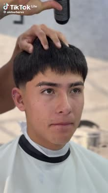
Seg. 0: el resultado ya peinado, primer plano de la cara. Sin texto ni voz.
El resultado es el hook. Corto y con la reacción del cliente.
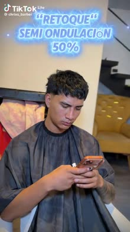
Seg. 0: cliente terminado y texto grande "RETOQUE SEMI ONDULACIÓN 50%".
Nombra la técnica (se busca) y muestra el resultado de inmediato.
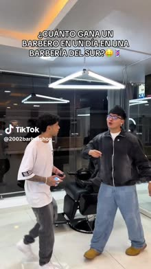
Seg. 0: "¿Cuánto gana un barbero en un día en una barbería del sur?"
Curiosidad y humor de barberos jóvenes: 472 comentarios.
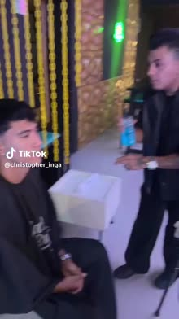
Seg. 0: detrás de cámaras con un influencer etiquetado.
Llega al público del influencer.
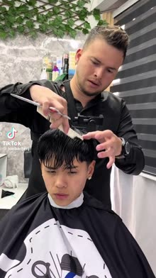
Seg. 0: tijera en acción sobre un cliente joven, con reggaetón en tendencia.
Cliente joven, música del momento y técnica de cerca.
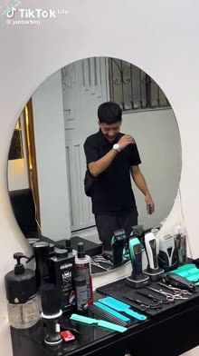
Seg. 0: el cliente entra bailando; a los 4 s muestra su foto de referencia.
Personalidad del cliente y la promesa del corte.
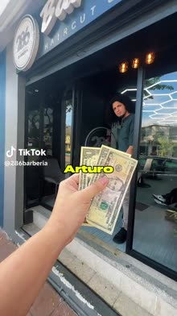
Seg. 0: POV con billetes en la mano: "¿me alcanza para…?", con subtítulos palabra por palabra.
Cuenta de solo 7 mil seguidores. Mostrar todo lo que incluye generó 1.346 comentarios.
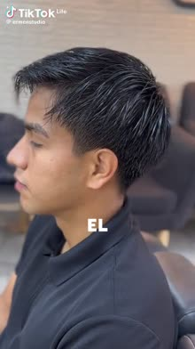
Seg. 0: "El muy trinchudo, lacio…": un problema de cabello muy común.
Quien tiene ese cabello se siente aludido y se queda.
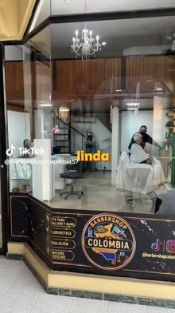
Seg. 0: POV desde la calle; recorrido con bebidas, mascarilla y servicios.
Vende la experiencia, no solo el corte.
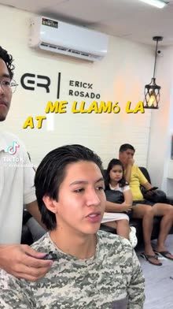
Seg. 0: el cliente con micrófono: "Me llamó la atención el estilo mood cut".
El cliente explica qué quiere y el que mira se identifica.
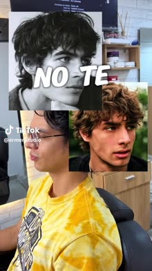
Seg. 0: "NO TE HAGAS UN MOOD CUT" sobre fotos de referencia. Audio "This Is Halloween".
Lleva la contraria y promete un consejo al final.
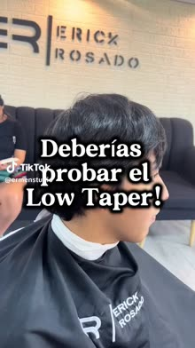
Seg. 0: "¡Deberías probar el Low Taper!" con fotos de referencia y la voz del barbero.
Recomendación con el nombre del corte y la autoridad del barbero.
Lo que no copiamos: precios en pantalla (los precios se ven al reservar), efectos de neón exagerados y menciones a otras plataformas.
El ritmo tiene que poder sostenerse mes tras mes. 3 videos por semana mantienen la cuenta activa y la actividad de la audiencia es igual todos los días. No se graba material por adelantado: lo que se graba el jueves se publica esa misma semana.
Esta semana es distinta: el jueves 29 se graban 2 videos (transformación y "Tu primera vez en Oli & Eli") y el sábado 31 se graba 1 (Halloween). La semana tipo de abajo empieza a aplicarse desde noviembre.
| Día | Qué se hace | Tiempo de Ricardo |
|---|---|---|
| Lunes | Revisar las métricas de la semana anterior (20 min), escribir los 3 guiones (50 min) y enviarlos a la CEO. La CEO aprueba hasta el martes a las 12:00. | 1 h 10 min |
| Jueves 15:00–18:00 | Desde noviembre: grabar los 3 videos aprobados de la semana. Es la franja con más clientes, que sirven para las transformaciones. | 3 h |
| Viernes 9:00–12:00 | Desde noviembre: editar los 3 videos y dejarlos programados. Visto bueno de la CEO antes de las 15:00; si no hay respuesta, se publica lo aprobado el lunes. | 3 h |
| Vie 19:00 · Sáb 19:00 · Dom 18:00 | Publicación automática (ya programada). Eli responde comentarios en dos bloques: 19:15 y 21:00. | — |
| Total por semana · unas 29 h al mes para 12–13 videos | 7 h 10 min | |
Ritmo mínimo, si una semana se complica: 2 videos (sábado y domingo), unas 5 h esa semana.
| Tipo de video | Duración | Edición | Programar* |
|---|---|---|---|
| Transformación con música, sin voz | 15–20 s | 45 min | 10 min |
| Video con voz y subtítulos palabra por palabra | 40–60 s | 60–75 min | 10 min |
| Sketch o humor con efectos de sonido | 15–30 s | 75–90 min | 10 min |
| Si se usa material de archivo (se suma) | — | +20 min de búsqueda | — |
*Programar incluye portada, descripción, hashtags, ubicación (Tumbaco) y música. Se edita en CapCut con plantillas fijas: recuadro rojo y negro, tipografía y cierre con el nombre.
Todavía no hay nada grabado, así que esta semana se aplica el ciclo completo por primera vez con dos sesiones de grabación:
| Cuándo | Qué | Ricardo |
|---|---|---|
| Lun 26 (hoy) | Planificación terminada. Ricardo envía este plan a la CEO | 1 h 10 min |
| Mar 27 · hasta 12:00 | La CEO aprueba el plan y responde las preguntas de la última página | — |
| Mar 27 – Mié 28 | Preparativos del equipo (lista abajo) | — |
| Jue 29 · 15:00–16:15 | Graba Video 1: transformación de un cliente | 1 h 15 min |
| Jue 29 · 16:30–17:15 | Graba Video 2: Tu primera vez en Oli & Eli | 45 min |
| Vie 30 · 9:00–11:00 | Editar y programar los videos 1 y 2 (55 + 60 min) y enviarlos a la CEO | 2 h |
| Vie 30 · hasta 15:00 | Visto bueno de la CEO. Si no hay respuesta, se publica lo aprobado el martes | — |
| Vie 30 · 19:00 | Publica Video 1: El corte que quiere mi cliente | — |
| Sáb 31 · 14:00–16:00 | Graba Video 3: Halloween en la barbería, con todos disfrazados | 2 h |
| Sáb 31 · 19:00 | Publica Video 2: Tu primera vez en Oli & Eli | — |
| Dom 1 nov · 9:00–10:15 | Editar y programar el video 3 y enviarlo a la CEO. Visto bueno hasta las 14:00 | 1 h 15 min |
| Dom 1 nov · 18:00 | Publica Video 3: Halloween en la barbería | — |
| Total de Ricardo esta semana | 8 h 25 min | |
Esta semana pasa de las 7 horas normales por la grabación extra de Halloween. Desde noviembre vuelve al ritmo de una sola grabación por semana. El video de Halloween se edita el domingo porque se graba el sábado por la tarde: así se evita editar a las prisas la noche del sábado.
| Quién | Qué tiene que dejar listo |
|---|---|
| Eli / recepción | Buscar en la agenda del jueves 29 a las 15:00 un cliente con cabello largo o muy crecido que quiera un cambio grande. Pedirle permiso para grabar y que traiga una foto del corte que quiere. Si es menor de edad, se graba sin cara. |
| Recepción y un barbero | Estar disponibles el jueves 29 de 16:30 a 17:15 para el video 2. Tener lista la bebida de cortesía y la mascarilla de puntos negros. Definir quién hace de "cliente" (alguien del equipo o el cliente de las 15:00 si acepta). |
| Todo el equipo | Venir disfrazado el sábado 31 desde las 14:00. Disfraces sencillos y reconocibles (capa, antifaz, sombrero, maquillaje ligero). Nada que estorbe para cortar. |
| Ricardo | Cámara con baterías cargadas, tarjeta formateada, lentes limpios, trípode y luz. Dejar lista la plantilla de CapCut (recuadro rojo y negro) y elegir los audios: uno en tendencia y "This Is Halloween". |
Cada video tiene tres partes:
Antes de cada guion va la hoja de la sesión, con la fecha, la hora, el lugar, las personas y lo que se necesita.
Configuración de cámara para todas las tomas · Sony a6700
| Formato | 1080p a 60 fps, XAVC S-I o XAVC HS en 4:2:2 de 10 bits. Los 60 fps permiten cámara lenta al 50 % en una línea de tiempo de 30 fps. |
| Orientación | Cámara en vertical (soporte en L o rótula del trípode girada), para grabar directamente en 1080 × 1920 sin recortar. |
| Obturación | 1/120. En Ecuador la red eléctrica es de 60 Hz y con 1/125 las luces LED y los fluorescentes del local pueden parpadear. |
| Perfil de imagen | S-Cinetone: sale con buen color sin necesidad de etalonar, lo que ahorra tiempo de edición. S-Log3 solo si hay tiempo para corregir color. |
| Balance de blancos | Manual, medido con una hoja blanca bajo la luz del local. No usar automático, que cambia entre tomas. |
| ISO | Automático con límite de 3200. |
| Enfoque | AF-C con detección de cara y ojos (sujeto: humano). En los detalles de máquina y tijera, zona pequeña o manual. |
| Diafragma | f/2–f/2.8 para caras y detalles (a f/1.4 muy de cerca se sale de foco). f/4 para grupos. |
Lentes (en la a6700 el recorte es de 1.5×):
Siempre: grabar 3 segundos antes y 3 después de cada acción; si una toma sale mal, repetirla en el momento. Si CapCut va lento con el material 4:2:2 de 10 bits, crear proxies antes de editar.
| Lugar | Oli&Eli Tu Barbería, Tumbaco (Juan Montalvo y Simón Bolívar) [CONFIRMAR dirección]. Silla de Oli, mostrador y espejo principal. |
| Horario |
14:30 Ricardo llega y arma el equipo: trípode, luz, encuadre de prueba en la silla y limpieza del espejo y de la estación. 15:00–16:15 Video 1: transformación del cliente. 16:15–16:30 Pausa: revisar que todas las tomas estén bien. 16:30–17:15 Video 2: Tu primera vez en Oli & Eli. 17:15–17:30 Respaldo: copiar todo el material a la computadora. |
| Personas | Ricardo (graba) · Oli (o el barbero asignado al cliente) · cliente de las 15:00 · Oli para el video 2 a las 16:30 |
| Equipo | Sony a6700 con 2 baterías cargadas y tarjeta de 64 GB o más · lentes 15 mm, 35 mm y 50 mm · trípode con soporte vertical · luz LED · micrófono de solapa · paño para el lente |
| Utilería | Capa limpia · secadora · cera o polvo · bebida de cortesía · mascarilla de puntos negros |
| Permisos | Permiso del cliente, grabado en video al final. Si el cliente es menor de edad, no se graba la cara. |
Un cliente llega con el cabello largo o muy crecido y una foto del corte que quiere. El video abre con el resultado final, muestra en un segundo cómo llegó y cierra con su reacción. Es el mismo formato del video más visto de la cuenta (249.8 K), ahora con un cliente hombre.
Objetivo: Atraer clientes nuevos: que quien lo vea piense "yo quiero ese corte" y agende.
Para quién: Hombres de 14 a 35 años que quieren cambiar de corte.
| N.º | Plano | Lente | Cómo se graba | Grabar |
|---|---|---|---|---|
| 1 | Antes · espalda | 35 mm · f/2 | Cliente sentado con la capa, sin tocarle el cabello. Trípode detrás de la silla, a la altura de la cabeza. | 10 s |
| 2 | Antes · perfil | 35 mm · f/2 | Trípode al costado. El cliente mira al frente y luego gira despacio la cabeza. | 10 s |
| 3 | Antes · frente | 35 mm · f/2 | Trípode delante de la silla, entre el espejo y el cliente. Cara seria, como "no aguanto más este cabello". | 10 s |
| 4 | Foto de referencia | 35 mm · f/2 | Cámara en mano. El cliente acerca su celular a la cámara con la foto del corte que quiere. | 5 s |
| 5 | Proceso · máquina | 50 mm · f/2.8 | Plano cerrado del costado de la cabeza mientras se hace el degradado. | 10 s |
| 6 | Proceso · tijera | 50 mm · f/2.8 | Plano cerrado de la parte de arriba, mostrando cómo cae el cabello. | 10 s |
| 7 | Proceso · navaja | 50 mm · f/2.8 | Muy cerca: el perfilado de la línea o la patilla. | 5 s |
| 8 | Proceso · peinado | 50 mm · f/2.8 | Secadora y producto en el cabello, desde el costado. | 10 s |
| 9 | Resultado · cara | 35 mm · f/2 | Trípode delante, primer plano de la cara ya peinada. El cliente mira a cámara y luego sonríe. Esta toma abre el video. | 10 s |
| 10 | Giro de silla | 15 mm · f/2.8 | Trípode fijo delante. El barbero gira la silla despacio, de espaldas a frente. | 5 s |
| 11 | Reacción | 35 mm · f/2 | El cliente se mira en el espejo y se toca el cabello. Grabar su reacción real, sin indicaciones. | 10 s |
| 12 | Permiso | 35 mm · f/2 | Ricardo pregunta: "¿Nos das permiso para publicarlo?" y graba la respuesta. | 5 s |
| 0–2 s | El resultado: primer plano de la cara ya peinada. Texto: ¿Te harías este [nombre del corte]? 👀 |
| 2–4 s | Destello de 1 segundo del "antes". Texto: *Su antes 😳 |
| 4–12 s | La foto de referencia y el proceso (máquina, tijera, navaja, peinado), al ritmo de la música. |
| 12–18 s | Giro de silla y reacción. Texto: ¿Igual a la foto o mejor? 👇 |
| CTA | "Agenda en el link del perfil 👆" |
| Descripción | Me trajo la foto y le dije: de una, vamos a hacerlo 💈 #OliEliBarber #[nombredelcorte] #barberiaquito #tumbaco |
Un recorrido en primera persona, como si quien mira fuera el cliente: entra al local, lo reciben, le ofrecen una bebida, el barbero le asesora, le hacen el corte y la mascarilla de puntos negros, y sale listo. Muestra que en Oli & Eli no es solo un corte: es una experiencia. En el análisis, dos barberías de Guayaquil con este formato pasaron las 246 mil y las 897 mil vistas.
Objetivo: que quien lo vea quiera vivir la experiencia y agende.
Para quién: hombres de 14 a 35 años que todavía no conocen la barbería.
| N.º | Plano | Lente | Cómo se graba | Grabar |
|---|---|---|---|---|
| 1 | Entrada (POV) | 15 mm · f/2.8 | Cámara en mano a la altura de los ojos. Se abre la puerta y se entra al local, como si fuera el cliente. | 5 s |
| 2 | Recepción | 15 mm · f/2.8 | Recepción saluda mirando a cámara: "¡Bienvenido a Oli & Eli!". | 5 s |
| 3 | Bebida | 35 mm · f/2 | Le entregan la bebida a la cámara; se ve la mano recibiéndola. | 5 s |
| 4 | Asesoría | 35 mm · f/2 | El barbero, frente al espejo, explica qué corte le queda mejor, señalando con las manos. | 8 s |
| 5 | Corte · detalle | 50 mm · f/2.8 | Plano cerrado de la máquina en el costado de la cabeza. | 5 s |
| 6 | Mascarilla · aplicar | 50 mm · f/2.8 | Se aplica la mascarilla de puntos negros en la nariz y las mejillas. | 8 s |
| 7 | Mascarilla · retirar | 50 mm · f/2.8 | Se retira despacio, de cerca. Es la toma más llamativa: grabarla completa. | 10 s |
| 8 | Resultado | 35 mm · f/2 | El cliente se mira al espejo, se toca el cabello y sonríe. | 5 s |
| 9 | Salida | 15 mm · f/2.8 | El barbero choca la mano a cámara: "Nos vemos en 15 días". | 5 s |
| 0–2 s | Se abre la puerta del local. Texto: POV: tu primera vez en Oli & Eli |
| 2–8 s | Recepción, bebida y asesoría, una toma por golpe de música. |
| 8–15 s | Corte y mascarilla de puntos negros (aplicar y retirar). |
| 15–20 s | El cliente se mira al espejo y sale. Texto: Y sales así |
| CTA | "Agenda en el link del perfil 👆" |
| Descripción | No es solo un corte, es la experiencia 🖤 ¿Ya la viviste? #OliEliBarber #barberiaquito #tumbaco #cumbaya |
| Lugar | Oli&Eli Tu Barbería, Tumbaco. Zona de sillas y entrada del local. |
| Horario |
13:30 Ricardo llega y arma el equipo. 14:00–14:20 Tomas del equipo disfrazado (fila y poses). 14:20–15:30 Corte con barbero disfrazado y segundo corte con otro disfraz. 15:30–15:50 Clientes disfrazados (si llegan). 15:50–16:00 Foto grupal. 16:00–16:15 Respaldo del material. |
| Personas | Ricardo (graba) · todo el equipo disfrazado desde las 14:00 · 2 clientes que acepten salir en video |
| Equipo | Sony a6700 con 2 baterías cargadas y tarjeta de 64 GB o más · lentes 15 mm, 35 mm y 18–135 mm · trípode con soporte vertical · luz LED · paño para el lente |
| Utilería | Disfraces sencillos de todo el equipo (nada que estorbe para cortar) · capa limpia · secadora · producto |
| Permisos | Permiso grabado de cada cliente. Si el cliente es menor de edad, no se graba la cara. |
El sábado de Halloween todo el equipo trabaja disfrazado. El video muestra al equipo en sus disfraces, a barberos disfrazados cortando a clientes y una foto grupal, y pregunta qué disfraz ganó. Aprovecha la fecha y el audio de Halloween en tendencia.
Objetivo: Alcance y comentarios: mostrar el ambiente divertido del equipo y que la gente comente su disfraz favorito.
Para quién: Todo el público; está pensado para que se comparta y se comente.
| N.º | Plano | Lente | Cómo se graba | Grabar |
|---|---|---|---|---|
| 1 | Barbero con la máquina · primer plano | 35 mm · f/2 | Un barbero disfrazado, de frente, enciende la máquina y mira a cámara con cara seria. Trípode a la altura de la cara. | 8 s |
| 2 | Equipo en fila | 15 mm · f/4 | Trípode fijo, todos en fila frente a las sillas, quietos. | 5 s |
| 3 | Poses individuales | 15 mm · f/4 | Mismo encuadre que la toma 2. Cada persona da un paso al frente y hace una pose o un gesto de su personaje, uno por uno. | 4 s c/u |
| 4 | Corte · barbero 1 | 35 mm · f/2.8 | Barbero disfrazado cortando: planos cerrados de máquina, tijera y peinado. | 30 s |
| 5 | Reacción · cliente 1 | 35 mm · f/2 | El cliente se mira al espejo y reacciona al resultado y al barbero disfrazado. | 10 s |
| 6 | Corte · barbero 2 | 35 mm · f/2.8 | Otro barbero con otro disfraz haciendo un corte parecido, mismos planos. | 30 s |
| 7 | Clientes disfrazados | 18–135 mm · f/4 | Si llega un cliente disfrazado: su entrada y su reacción al ver al equipo. | 10 s |
| 8 | Foto grupal | 15 mm · f/4 | Todo el equipo junto, mirando a cámara. Grabar 5 s quietos y luego todos saludando. También sirve para la portada. | 10 s |
| 0–2 s | Barbero disfrazado con la máquina mirando a cámara. Texto: Así cortamos disfrazados 👻 |
| 2–6 s | El equipo en fila y las poses una por una, al ritmo de la música. |
| 6–13 s | Cortes de los dos barberos disfrazados y la reacción del cliente. |
| 13–18 s | Foto grupal. Texto: ¿Cuál disfraz se lleva el premio? 👇 |
| CTA | "Agenda en el link del perfil 👆" |
| Descripción | Feliz Halloween desde Oli & Eli 👻💈 ¿Cuál disfraz fue tu favorito? #halloween #barberia #OliEliBarber #tumbaco |
| Métrica | Hoy | Meta |
|---|---|---|
| Clientes nuevos que llegan por TikTok | Sin medir | 10 en noviembre y 15–20 en diciembre |
| Personas que siguen viendo después del segundo 2 | Menos del 50 % | Más del 65 % |
| Personas que ven el video completo | 16–24 % | Más del 30 % |
| Seguidores nuevos por semana | 21 | 60 o más |
Cómo se mide: recepción pregunta a cada cliente nuevo "¿Cómo nos conociste?" y anota "TikTok". Cada lunes Ricardo revisa las métricas de cada video y las presenta junto con el plan.